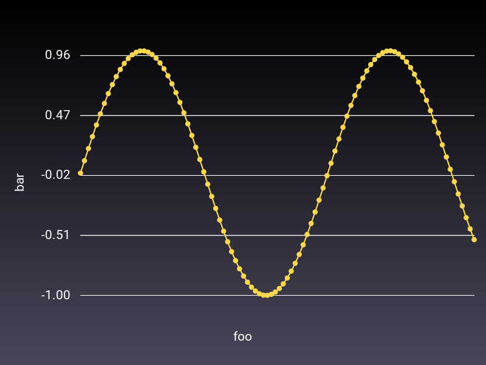
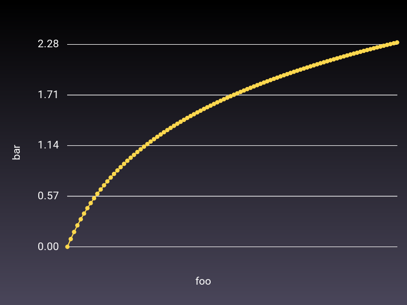
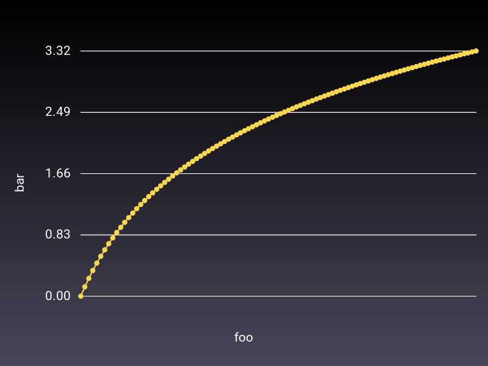
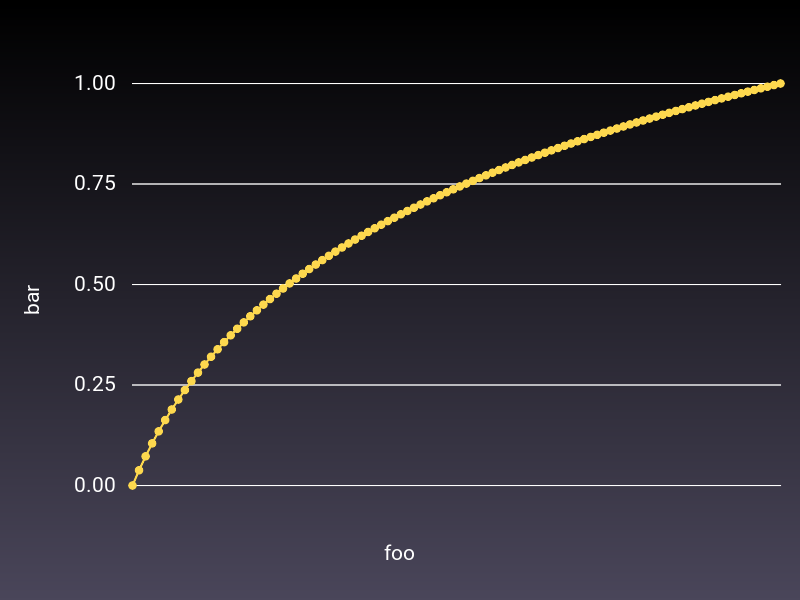

require "charty"
require "datasets"
require "numo/narray"falsegeeknees
July 23, 2023
{:charty=>"0.2.12", :datasets=>"0.1.7", :numo_narray=>"0.9.2.1"}penguins = Datasets::Penguins.new
plot = Charty.scatter_plot(data: penguins, x: :body_mass_g, y: :flipper_length_mm, color: :species)#<Charty::Plotter:0x000000010630fb68 @backend=#<Charty::Backends::Gruff:0x000000010630fa00 @plot=Gruff>>curve = charty.curve do
function {|x| Math.sin(x) }
range x: 0..10, y: -1..1
xlabel 'foo'
ylabel 'bar'
end
curve.render("sample_images/sin.png")
curve = charty.curve do
function {|x| Math.log(x) }
range x: 1..10, y: -1..1
xlabel 'foo'
ylabel 'bar'
end
curve.render("sample_images/log.png")
curve = charty.curve do
function {|x| Math.log2(x) }
range x: 1..10, y: -1..1
xlabel 'foo'
ylabel 'bar'
end
curve.render("sample_images/log2.png")
curve = charty.curve do
function {|x| Math.log10(x) }
range x: 1..10, y: -1..1
xlabel 'foo'
ylabel 'bar'
end
curve.render("sample_images/log10.png")